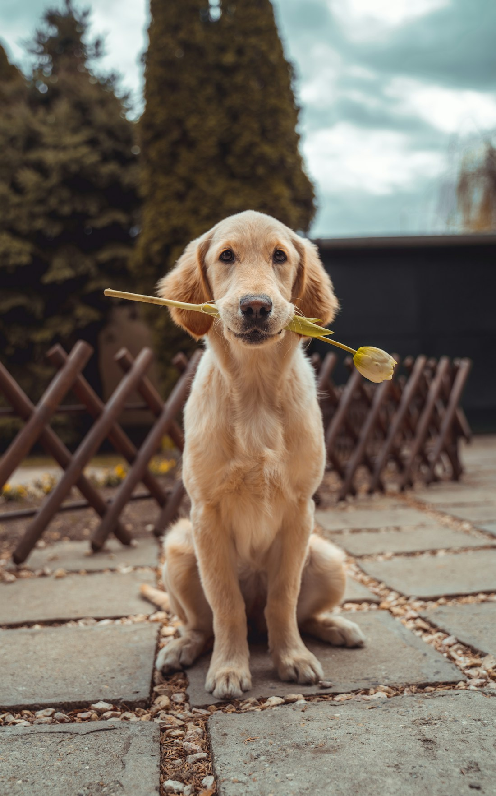
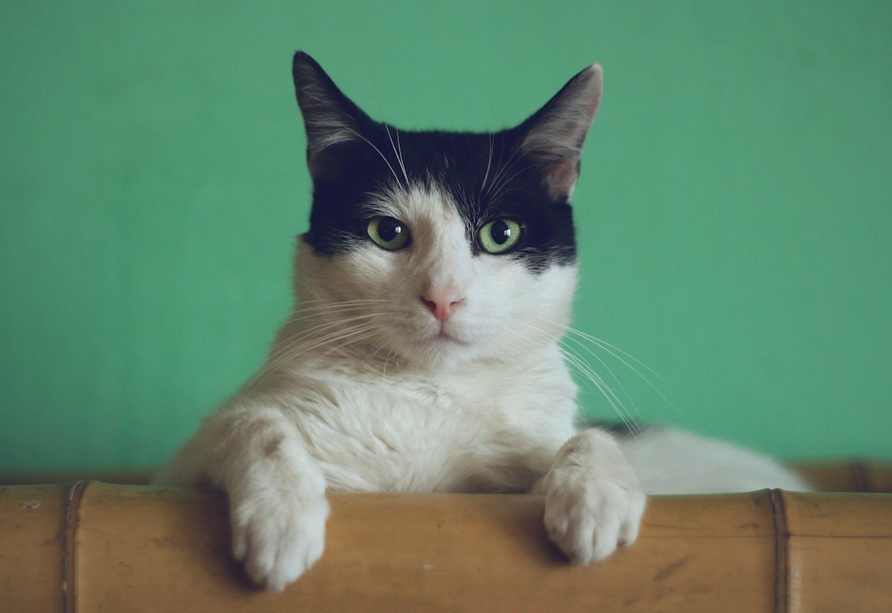
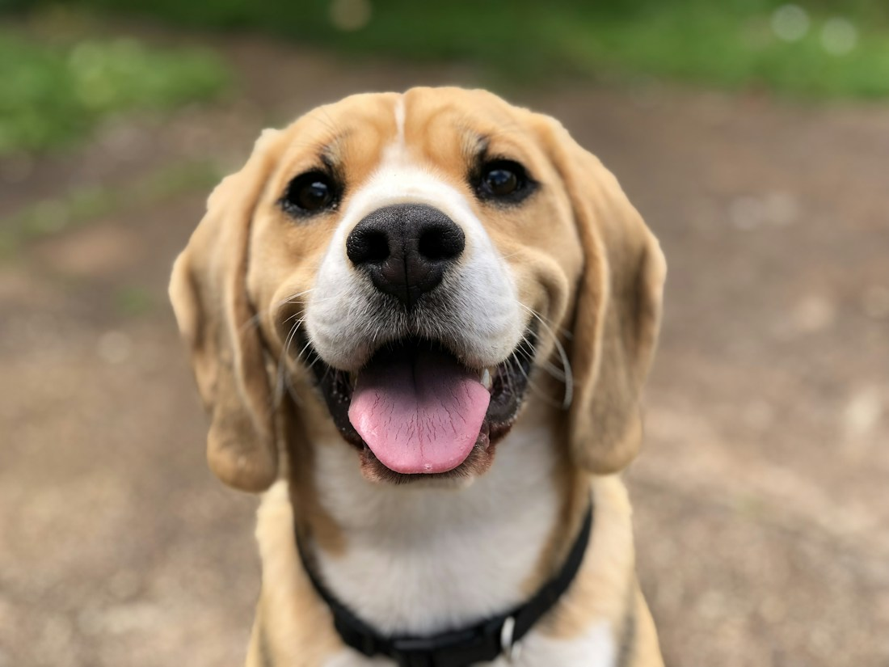

Знакомство без спешки
Расскажем о характере каждого питомца и поможем выбрать друга под ваш ритм жизни.
Шесть маленьких историй. Один большой шанс.
Они не умеют выбирать хозяев.
Но умеют любить — всем сердцем.
Познакомьтесь с тем, кто ждёт именно вас.

Уже готов любить вас.
2 года · Добряк и компаньонВместе — от знакомства до дома
Расскажем о характере каждого питомца и поможем выбрать друга под ваш ритм жизни.
Открыто расскажем о прививках, обследованиях и особых потребностях животного.
Поможем подготовить дом и обсудим вопросы, возникающие во время адаптации.
Знакомьтесь, будущие друзья
Мальчик · 2 года
Обожает долгие прогулки, мячики и быть рядом со своим человеком.
Добряк и компаньон

Девочка · 1 год
Нежная кошечка, которая превратит любой вечер в самый уютный.
Маленькое мурчащее счастье

Мальчик · 3 года
Верный спутник для прогулок по лесу и тёплых встреч у двери.
Всегда готов к приключениям
Будем рады знакомству
Договоритесь о визите заранее.
Адрес вымышлен; на карте показана условная точка в Москве.
Открыть карту в отдельном окне